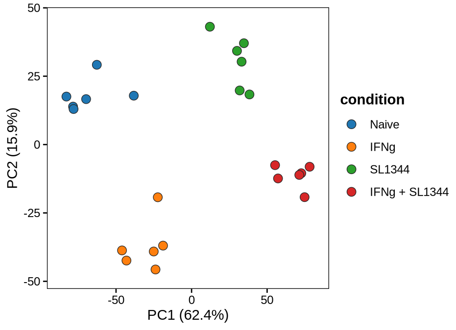
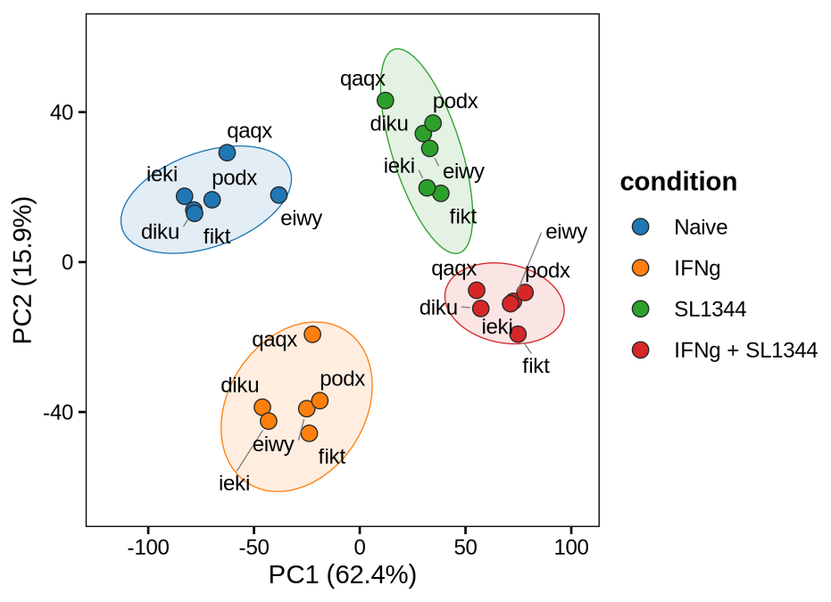
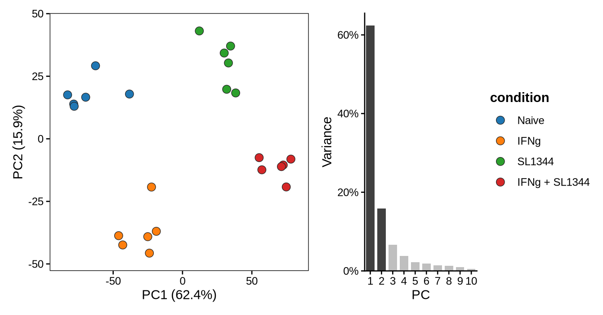
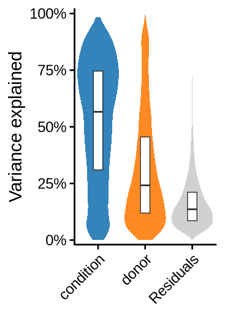
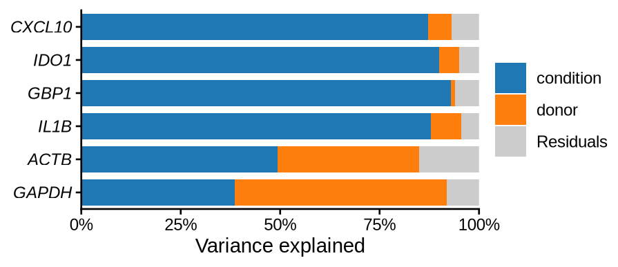
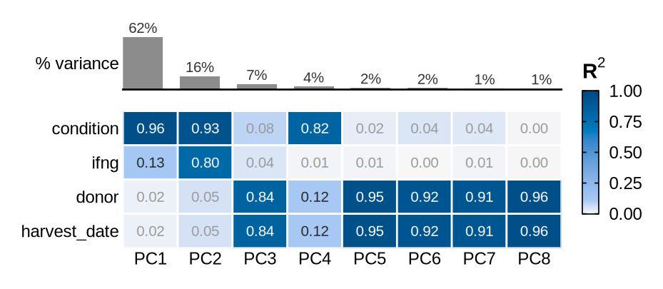
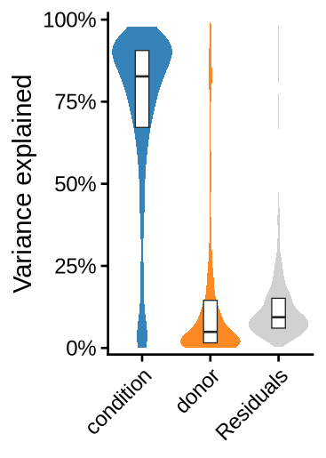
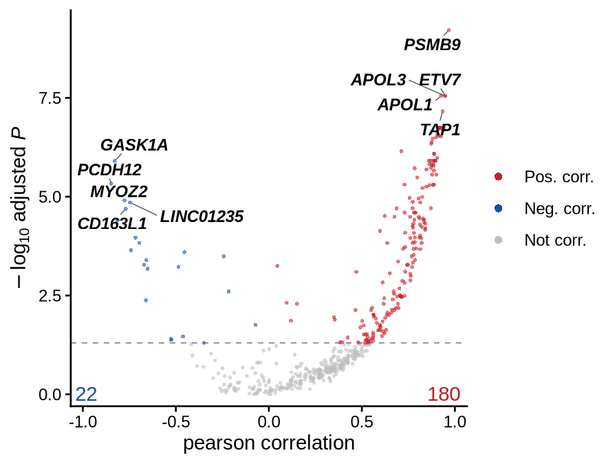

Question: before testing anything, what separates the samples, and is it the biology or something else (donor, batch, library size)?
| Function | Use |
|---|---|
keywords_to_info() |
sample annotation from sample names |
filter_low_expression_genes() |
drop genes too lowly expressed to be informative |
plot_pca() |
samples on principal components |
extract_pc_loadings() |
genes driving each PC |
plot_variance_explained() |
how much of the variation each covariate explains |
summarize_group_expression() |
mean (or other summary) per group, e.g. for heatmaps |
calc_expr_corr() |
genes correlated with a gene of interest, adjusting for covariates |
Data: iPSC-derived macrophages of 6 donors, each naive, stimulated with interferon-γ (IFNg), infected with Salmonella (SL1344), or both (Alasoo et al. 2018; gene-level counts from the Bioconductor package macrophage). The sample table also records two processing dates, which are shared by the four samples of a donor.
mac <- docs_macrophage()
counts <- mac$counts
dim(counts)
#> [1] 26024 24
head(mac$samples[c("donor", "harvest_date", "extraction_date")], 4)
#> donor harvest_date extraction_date
#> diku_naive diku 11/6/2015 11/30/2015
#> diku_IFNg diku 11/6/2015 11/30/2015
#> diku_SL1344 diku 11/6/2015 11/30/2015
#> diku_IFNg_SL1344 diku 11/6/2015 11/30/2015Annotating samples from their names
keywords_to_info() maps a sample name to a value by
regular-expression keywords: the first keyword found wins, so list
specific patterns before general ones (here “IFNg_SL1344” before
“IFNg”):
keywords <- c("IFNg_SL1344", "IFNg", "SL1344", "naive")
labels <- c("IFNg + SL1344", "IFNg", "SL1344", "Naive")
# Vectorized over sample names
condition <- keywords_to_info(
colnames(counts),
keywords = keywords,
info = labels
)
condition_levels <- c("Naive", "IFNg", "SL1344", "IFNg + SL1344")
samples <- data.frame(
donor = mac$samples$donor,
condition = factor(unname(condition), levels = condition_levels),
harvest_date = mac$samples$harvest_date,
row.names = colnames(counts)
)
table(samples$condition)
#>
#> Naive IFNg SL1344 IFNg + SL1344
#> 6 6 6 6Filtering and normalizing
filter_low_expression_genes() keeps genes with at least
1 count per million (CPM) in at least min_group_size
samples. Set it to the size of the smallest group of interest (here 6
samples per condition), so a gene expressed in only one condition is
kept:
counts_f <- filter_low_expression_genes(counts, min_group_size = 6)
c(before = nrow(counts), after = nrow(counts_f))
#> before after
#> 26024 13303The plots below take normalized, log-scale values (here edgeR’s
TMM-normalized log2 CPM; DESeq2’s vst() works the same
way). Raw counts would mostly show library size and the few most
abundant genes.
y <- edgeR::normLibSizes(edgeR::DGEList(counts_f))
logcpm <- edgeR::cpm(y, log = TRUE, prior.count = 2)PCA
plot_pca() takes the normalized matrix (and runs a PCA
on the n.top = 500 most variable genes, as
DESeq2::plotPCA()) or a prcomp result:
plot_pca(logcpm, samples, color.by = "condition")
#> PCA of 500 features x 24 samples
PC1 (62% of the variance) separates Salmonella-infected from uninfected macrophages, PC2 (16%) IFN-γ-stimulated from unstimulated ones: the two treatments dominate the variation.
Variants
95% ellipses (multivariate t) per group of at least 4 samples, and sample labels:
plot_pca(
logcpm,
samples,
color.by = "condition",
ellipse = TRUE,
label.by = "donor"
)
The % variance of the first PCs, with the plotted ones in dark:
plot_pca(logcpm, samples, color.by = "condition", scree = TRUE)
Genes behind the PCs
extract_pc_loadings() returns the genes with the largest
absolute loadings on each PC of a prcomp result:
top500 <- order(apply(logcpm, 1, var), decreasing = TRUE)[1:500]
pca <- prcomp(t(logcpm[top500, ]))
loadings <- extract_pc_loadings(pca, pcs = 1:2, top_n = 8)
# One element per PC: PC_1, PC_2, ...
loadings$PC_1
#> IL12B CCR7 IL23A CSF3 IFNL1 IL36G CCL20
#> 0.10194798 0.09852192 0.09733031 0.09380510 0.09337377 0.09136720 0.08534562
#> C11orf96
#> 0.08509119The same prcomp result can be plotted with
plot_pca(pca, samples, ...).
What drives the variation
plot_variance_explained() splits each gene’s variance
between covariates. The built-in method fits a linear model per gene and
shares its R² between the covariates by the LMG method, so the fractions
sum to 1 with the residuals and do not depend on the order of the
covariates.
plot_variance_explained(logcpm, samples, covariates = c("condition", "donor"))
Condition explains about half of the variance of a typical gene (median across genes), donor about a quarter. The processing dates are shared by all samples of a donor, so they are fully confounded with donor and cannot be separated from it (the function stops with an error if both are given).
Variants
Stacked bars for a few genes:
plot_variance_explained(
logcpm,
samples,
covariates = c("condition", "donor"),
features = c("CXCL10", "IDO1", "GBP1", "IL1B", "ACTB", "GAPDH")
)
The R² of each top PC on each covariate, separately: which covariates drive the main axes of variation. Confounded covariates can be shown here, since each is tested on its own: harvest date gives the same R² as donor, as each donor was harvested on its own date.
plot_variance_explained(
logcpm,
samples,
covariates = c("condition", "ifng", "donor", "harvest_date"),
view = "pcs",
n.pcs = 8
)
The result of
variancePartition::fitExtractVarPartModel(), which fits
mixed models (categorical covariates as random effects), is drawn as it
is:
vp <- variancePartition::fitExtractVarPartModel(
logcpm[top500, ],
~ (1 | condition) + (1 | donor),
samples,
BPPARAM = BiocParallel::SerialParam(),
quiet = TRUE
)
plot_variance_explained(vp)
Group summaries
summarize_group_expression() summarizes each gene per
group (method = “mean”, “median”, “min”, “max” or “sum”).
pre_scale z-scores genes across samples before summarizing
and post_scale across groups after, the usual input of a
heatmap of group means (e.g. with ComplexHeatmap):
genes <- c("CXCL10", "IDO1", "GBP1", "IL1B", "IL6", "TNF")
means <- summarize_group_expression(
as.data.frame(logcpm[genes, ]),
samples,
group_by = "condition",
post_scale = TRUE
)
round(means, 2)
#> Naive IFNg SL1344 IFNg + SL1344
#> CXCL10 -1.44 0.54 0.11 0.79
#> IDO1 -1.44 0.45 0.14 0.85
#> GBP1 -1.32 0.64 -0.22 0.90
#> IL1B -0.89 -0.84 0.80 0.93
#> IL6 -1.22 -0.40 0.67 0.95
#> TNF -1.12 -0.49 0.49 1.12Genes correlated with a gene of interest
calc_expr_corr() fits, for every gene, a linear model of
its expression on a query gene (or any numeric covariate), optionally
with covariates regressed out, and returns the slope, correlation, R²
and adjusted p-value of each gene, with a volcano plot. Here, genes
following STAT1, the transcription factor of the IFN-γ
response, across samples, with donor as a covariate. The results table
is written to base_dir; plot_model = TRUE also
saves one plot per significant gene there.
# The query gene must be a row of the expression table, with the genes tested
genes_tested <- union("STAT1", rownames(logcpm)[top500])
corr <- calc_expr_corr(
as.data.frame(logcpm[genes_tested, ]),
query_var = "STAT1",
metadata = samples,
vars_to_regress = "donor",
base_dir = tempdir(),
verbose = FALSE
)
# Sorted by significance
head(as.data.frame(corr$model_results), 5)
#> gene query coef r_squared p_value FDR corr
#> 1 PSMB9 STAT1 1.0016016 0.9548374 1.217209e-12 6.086044e-10 0.9680643
#> 2 APOL3 STAT1 0.9883305 0.9152518 2.263521e-10 2.829401e-08 0.9472702
#> 3 APOL1 STAT1 0.9993314 0.9138376 2.167115e-10 2.829401e-08 0.9256467
#> 4 ETV7 STAT1 0.9810572 0.9230181 1.199055e-10 2.829401e-08 0.9483332
#> 5 TAP1 STAT1 0.9909345 0.9015358 6.936197e-10 6.936197e-08 0.9333458
#> corr_p_value corr_FDR corr_method sig
#> 1 1.047497e-14 5.237487e-12 pearson Positively correlated
#> 2 2.363637e-12 3.939395e-10 pearson Positively correlated
#> 3 9.354383e-11 6.590459e-09 pearson Positively correlated
#> 4 1.898691e-12 3.939395e-10 pearson Positively correlated
#> 5 2.914885e-11 2.914885e-09 pearson Positively correlated
corr$p_volcano